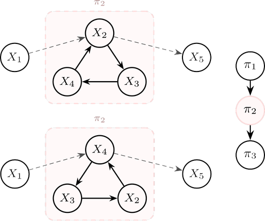
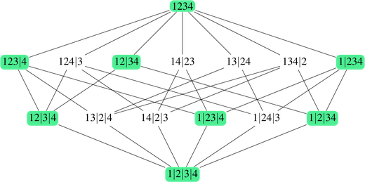
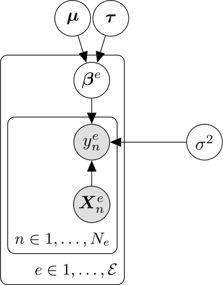

Coarsening Linear Non-Gaussian Causal Models with Cycles
TL;DR: Recover a compact, acyclic causal summary from a linear non-Gaussian system with feedback cycles, with a worst-case cubic-time algorithm.

TL;DR: Recover a compact, acyclic causal summary from a linear non-Gaussian system with feedback cycles, with a worst-case cubic-time algorithm.

TL;DR: Learn a simpler causal graph directly from interventional data, even when the intervention targets are unknown.

TL;DR: Use hierarchical Bayes to test which causal mechanisms stay invariant across environments, while incorporating prior knowledge and scaling to more predictors.